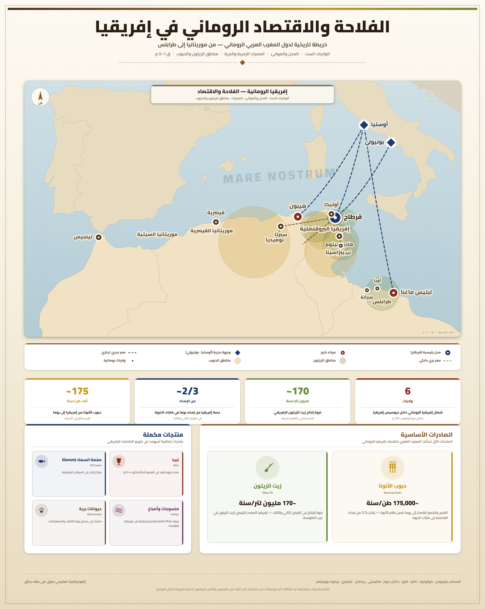
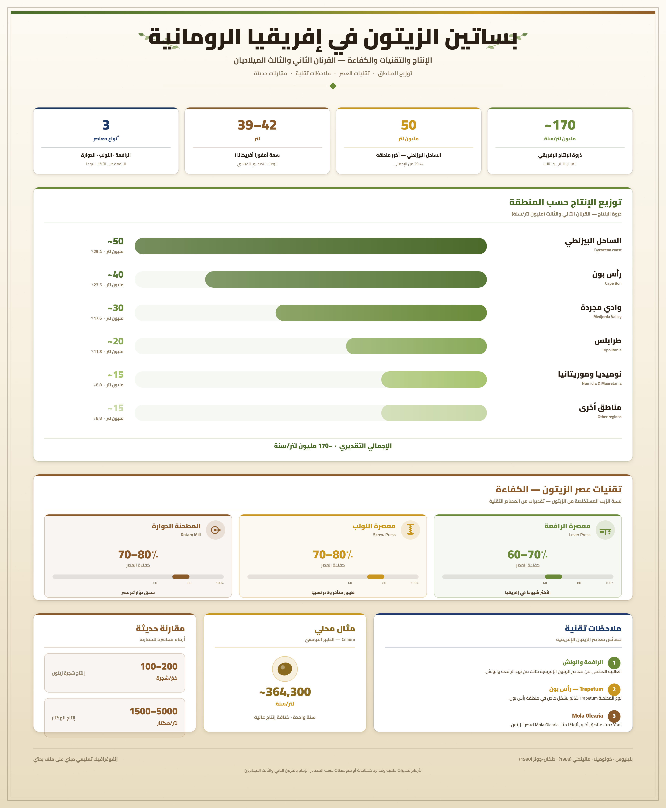
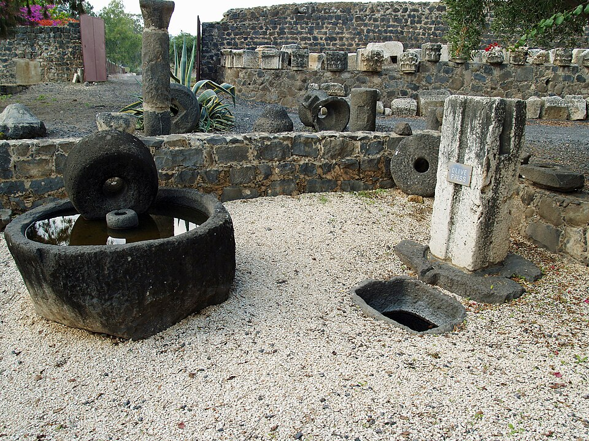
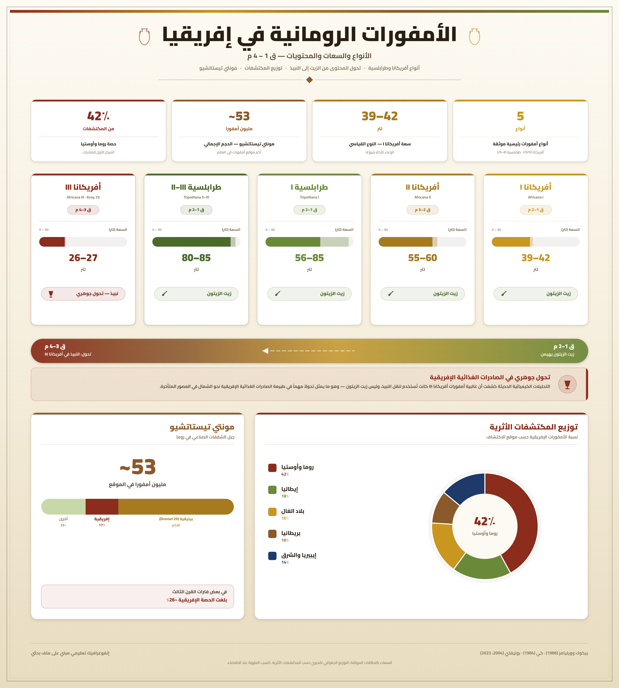
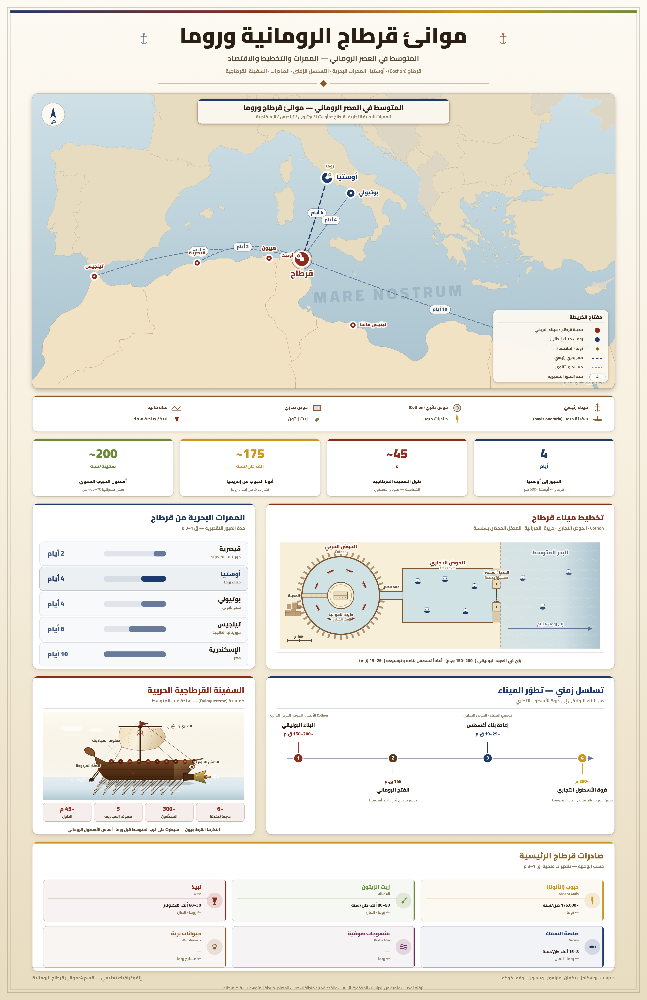
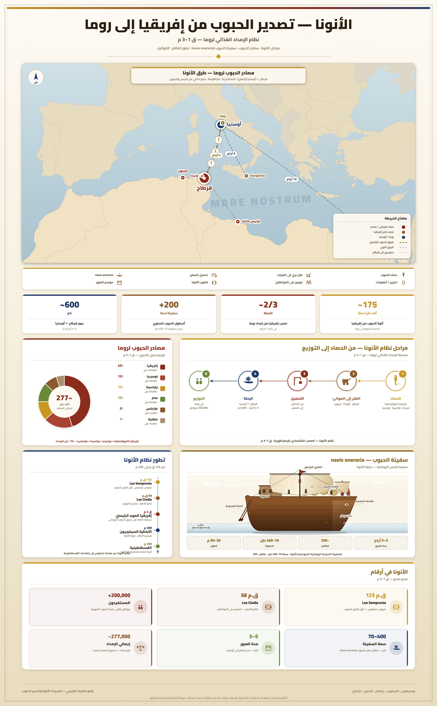

قرطاج وإسهاماتها في الحضارة الرومانية: الازدهار الاقتصادي – الفلاحة
مقدمة
مثلت قرطاج عاصمة إفريقيا البروقنصلية الرومانية، وأصبحت المزود الرئيسي لروما بالمواد الفلاحية.
ما مظاهر الازدهار الفلاحي؟ ما عوامله؟ ما دور الفلاحة في تطوير بقية القطاعات الاقتصادية؟
I عوامل الازدهار الفلاحي
1. سياسة روما المشجعة للفلاحة
بداية من القرن الأول ميلادي أصدرت روما عدة قوانين مشجعة:
- قانون منسيانا: ينص على إعفاء الفلاح الصغير من دفع الضرائب على أشجار الزياتين التي غرسها حديثًا ولم تبلغ طور الإنتاج.
- قانون هدريانا: نسبة إلى الإمبراطور هدريانوس الذي ينتمي إلى عائلة الأنطونيين والذي حكم بين 171م و138م، ومكن هذا القانون مزارعي الزياتين والأشجار المثمرة من امتيازات جبائية هامة، وسمح باستغلال الأراضي البور، ووفر المنشآت المائية.
تهدف هذه القرارات إلى إدماج السكان الأصليين واستغلالهم لخدمة مصالح روما في إطار ما سمي بسياسة الرومنة.
أ. المسح العقاري
عملت السلطات الرومانية على تحديد الممتلكات الفلاحية بهدف تنمية المجال الفلاحي.
2. أهمية الموروث القرطاجي
اهتم القرطاجيون بغراسة الزياتين والأشجار المثمرة، كما قاموا بوضع أساليب وتقنيات الإنتاج الفلاحي مثل موسوعة ماغون (عالم الفلاحة القرطاجي) التي تضمنت نصائح وتقنيات الزراعة وكيفية التعامل مع العمال وطرق صناعة الخمور وزيت الزيتون.
وقد استفاد الرومان من الموسوعة إثر قرار مجلس الشيوخ بترجمتها إلى اللغة اللاتينية.
II مظاهر الازدهار الفلاحي في إفريقيا البروقنصلية
1. تنوع الأنشطة
ازدهرت الفلاحة بولاية إفريقيا البروقنصلية، واكتسحت الكروم والزياتين مناطق الشمال والساحل الشرقي، وامتدت إلى الوسط والجنوب، بالإضافة إلى إنتاج الحبوب وتربية الماشية والصيد البحري.
2. ضخامة الإنتاج الفلاحي
تميز الإنتاج الفلاحي بضخامته، فارتفعت صادرات الحبوب نحو روما بتوفير ثلثي حاجياتها.
وانفردت ولاية إفريقيا البروقنصلية بتوفير حاجيات روما من الإنتاج الفلاحي منذ نهاية القرن الثالث ميلادي (زيوت، حبوب، خمور).
III دور الازدهار الفلاحي في تطوير بقية الأنشطة الاقتصادية
1. دوره في ازدهار الصناعة
ازدهرت عدة حرف نتيجة لارتباطها بالازدهار الفلاحي: نمو الصناعات الضرورية لتحويل الإنتاج الفلاحي كمعاصر الزيتون، وازدهرت صناعة الخزف لخزن ونقل المنتوجات الفلاحية.
2. دوره في ازدهار التجارة
انتعشت التجارة الخارجية وتكثفت الصادرات الفلاحية عبر الموانئ المتوسطية مع بقية بلدان المتوسط، كما تكثفت التجارة الداخلية حيث تعددت الأسواق والمحلات التجارية لبيع مختلف المنتوجات (فلاحية وحرفية).
خاتمة
بلغت إفريقيا البروقنصلية ازدهارًا فلاحيًا ساهم بدوره في ازدهار بقية القطاعات الاقتصادية.
📖 تعريفات
👤 شخصيات
- الإمبراطور هدريانوس: إمبراطور روماني ينتمي إلى عائلة الأنطونيين، حكم بين 171م و138م، ونُسب إليه قانون هدريانا الذي مكّن مزارعي الزياتين والأشجار المثمرة من امتيازات جبائية هامة، وسمح باستغلال الأراضي البور، ووفّر المنشآت المائية.
- ماغون: عالم الفلاحة القرطاجي، صاحب موسوعة ماغون التي تضمنت نصائح وتقنيات الزراعة وكيفية التعامل مع العمال وطرق صناعة الخمور وزيت الزيتون، وقد استفاد الرومان منها إثر قرار مجلس الشيوخ بترجمتها إلى اللغة اللاتينية.
🌍 دول ومناطق
- أفريقيا البروقنصلية: الولاية الرومانية بإفريقيا التي كانت قرطاج عاصمتها، وقد مثلت المزود الرئيسي لروما بالمواد الفلاحية، وانفردت بتوفير حاجياتها من الإنتاج الفلاحي منذ نهاية القرن الثالث ميلادي.
- روما: عاصمة الإمبراطورية الرومانية، كانت المزود الرئيسي بحاجياتها الفلاحية من ولاية إفريقيا البروقنصلية، خاصة الحبوب والزيوت والخمور.
📅 سنوات وفترات
- القرن الأول ميلادي: بداية إصدار روما للقوانين المشجعة للفلاحة (قانون منسيانا وقانون هدريانا).
- 171م – 138م: فترة حكم الإمبراطور هدريانوس الذي نُسب إليه قانون هدريانا.
- نهاية القرن الثالث ميلادي: التاريخ الذي انفردت فيه ولاية إفريقيا البروقنصلية بتوفير حاجيات روما من الإنتاج الفلاحي (زيوت، حبوب، خمور).
📌 أخرى
- قانون منسيانا: قانون روماني مشجع للفلاحة، ينص على إعفاء الفلاح الصغير من دفع الضرائب على أشجار الزياتين التي غرسها حديثًا ولم تبلغ طور الإنتاج.
- قانون هدريانا: قانون روماني مشجع للفلاحة، نسبة إلى الإمبراطور هدريانوس، مكّن مزارعي الزياتين والأشجار المثمرة من امتيازات جبائية هامة، وسمح باستغلال الأراضي البور، ووفّر المنشآت المائية.
- سياسة الرومنة: سياسة انتهجتها روما، تهدف إلى إدماج السكان الأصليين واستغلالهم لخدمة مصالح روما، ومن بين مظاهرها إصدار القوانين المشجعة للفلاحة.
- المسح العقاري: عملية قامت بها السلطات الرومانية لتحديد الممتلكات الفلاحية بهدف تنمية المجال الفلاحي.
- موسوعة ماغون: موسوعة فلاحية قرطاجية وضعها ماغون، تضمنت نصائح وتقنيات الزراعة وكيفية التعامل مع العمال وطرق صناعة الخمور وزيت الزيتون، وترجمها الرومان إلى اللغة اللاتينية.
- معاصر الزيتون: منشآت صناعية نمت بفضل الازدهار الفلاحي، تُستخدم لتحويل إنتاج الزيتون.
- صناعة الخزف: صناعة ازدهرت بفضل الازدهار الفلاحي، تُستخدم لخزن ونقل المنتوجات الفلاحية.
🗺️ خرائط ومعطيات مصورة





